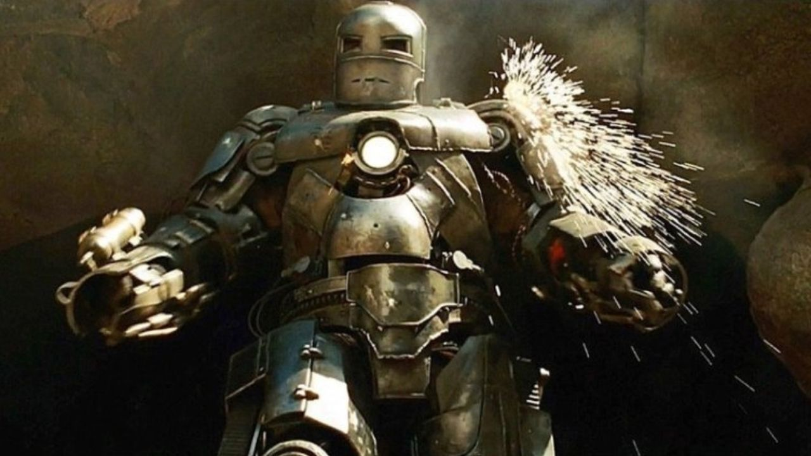
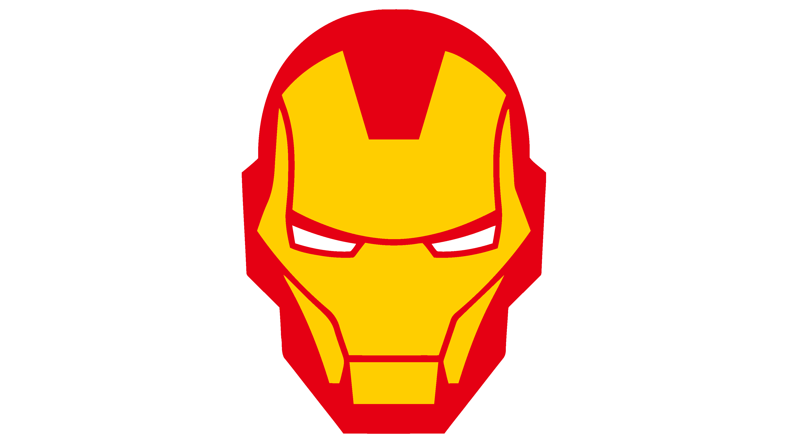
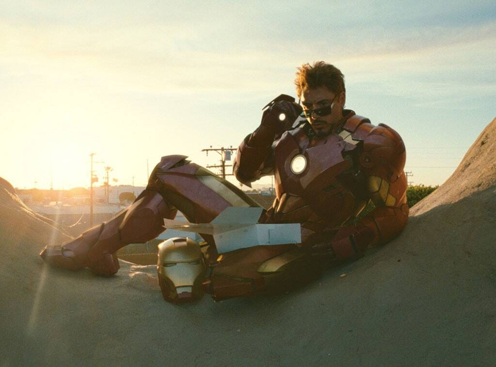
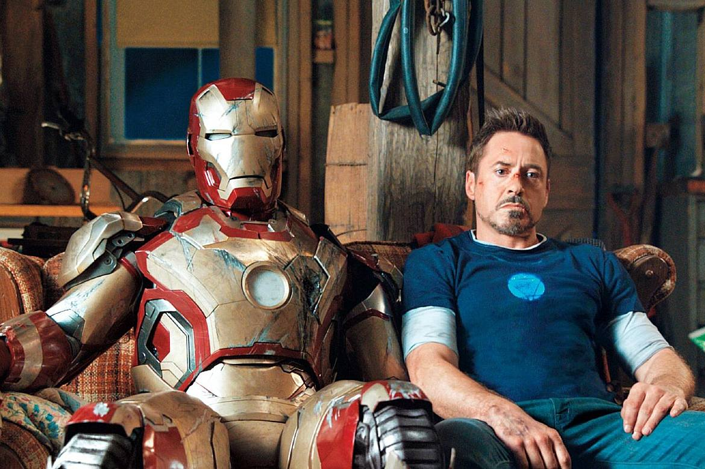
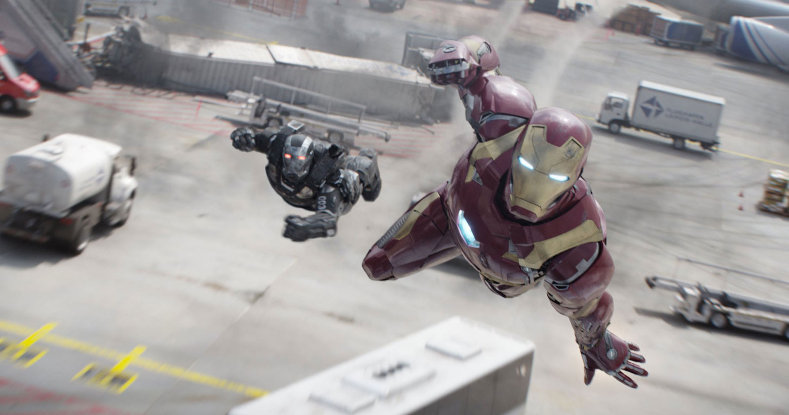

Homem de Ferro 1
Tony Stark é retratado de forma mais terrena, vulnerável e focada na sobrevivência
Assistir Agora
Para os fãs dos Vingadores, o Homem de Ferro é muito mais do que apenas o herói de armadura que deu início ao Universo Cinematográfico da Marvel; ele é o coração, a alma e a base emocional de toda a franquia.

Tony Stark é retratado de forma mais terrena, vulnerável e focada na sobrevivência
Assistir Agora
É amplamente considerado o verdadeiro ponto de partida para a fundação da equipe, funcionando muito mais como um prelúdio do crossover de 2012 do que apenas como uma sequência individual de Tony Stark.
Assistir Agora
A que ele toma mais porrada
Assistir Agora
Guerra contra Capitão America
Assistir Agora